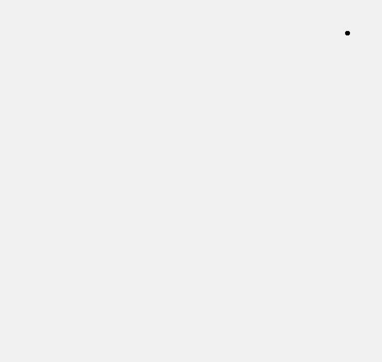

© 2019 《算法（第四版）》C# 题解 | Provided By 沈星繁
搜索解答
目前已完成到 2.5
2.5.26
上次更新：2019-02-13
发现了题解错误/代码缺陷/排版问题？请点这里：如何：提交反馈 。
题目
2.5.26
简单多边形。
给定平面上的 N 个点，用它们画出一个多边形。
提示：找到 y 坐标最小的点 p，在有多个最小 y 坐标的点时取 x 坐标最小者，
然后将其他点按照以 p 为原点的辐角大小的顺序依次连接起来。
解答
提示中已经给出了方法，使用上一题编写的比较器进行排序即可。
效果演示：

代码
绘图部分代码：
using System.Collections.Generic;
using System.Drawing;
using System.Windows.Forms;
using SortApplication;
namespace _2._5._26
{
public partial class Form2 : Form
{
Graphics panel;
List<Point2D> points;
Point2D startPoint;
double maxX = 0, maxY = 0;
public Form2()
{
InitializeComponent();
}
/// <summary>
/// 显示并初始化绘图窗口。
/// </summary>
public void Init()
{
Show();
this.panel = CreateGraphics();
this.points = new List<Point2D>();
this.startPoint = null;
}
/// <summary>
/// 向画板中添加一个点。
/// </summary>
/// <param name="point"></param>
public void Add(Point2D point)
{
this.points.Add(point);
if (this.startPoint == null)
{
this.startPoint = point;
this.maxX = point.X * 1.1;
this.maxY = point.Y * 1.1;
}
else if (this.startPoint.Y > point.Y)
this.startPoint = point;
else if (this.startPoint.Y == point.Y && this.startPoint.X > point.X)
this.startPoint = point;
if (point.X > this.maxX)
this.maxX = point.X * 1.1;
if (point.Y > this.maxY)
this.maxY = point.Y * 1.1;
this.points.Sort(this.startPoint.Polor_Order());
RefreashPoints();
}
public void RefreashPoints()
{
double unitX = this.ClientRectangle.Width / this.maxX;
double unitY = this.ClientRectangle.Height / this.maxY;
double left = this.ClientRectangle.Left;
double bottom = this.ClientRectangle.Bottom;
this.panel.Clear(this.BackColor);
Pen line = (Pen)Pens.Red.Clone();
line.Width = 6;
Point2D before = this.startPoint;
foreach (var p in this.points)
{
this.panel.FillEllipse(Brushes.Black,
(float)(left + p.X * unitX - 5.0),
(float)(bottom - p.Y * unitY - 5.0),
(float)10.0,
(float)10.0);
this.panel.DrawLine(line,
(float)(left + before.X * unitX),
(float)(bottom - before.Y * unitY),
(float)(left + p.X * unitX),
(float)(bottom - p.Y * unitY));
before = p;
}
this.panel.DrawLine(line,
(float)(left + before.X * unitX),
(float)(bottom - before.Y * unitY),
(float)(left + this.startPoint.X * unitX),
(float)(bottom - this.startPoint.Y * unitY));
}
}
}